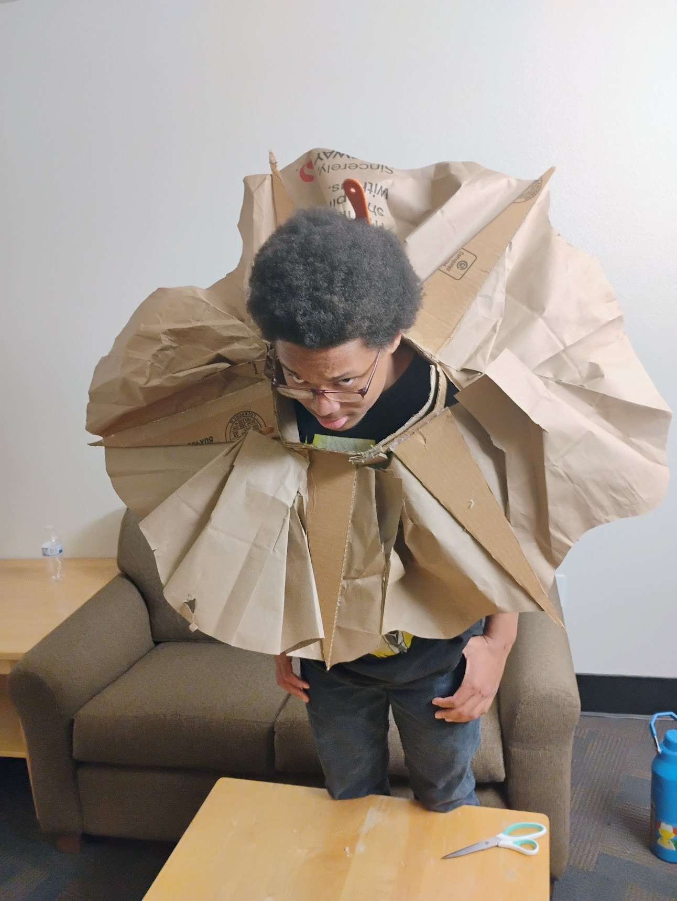
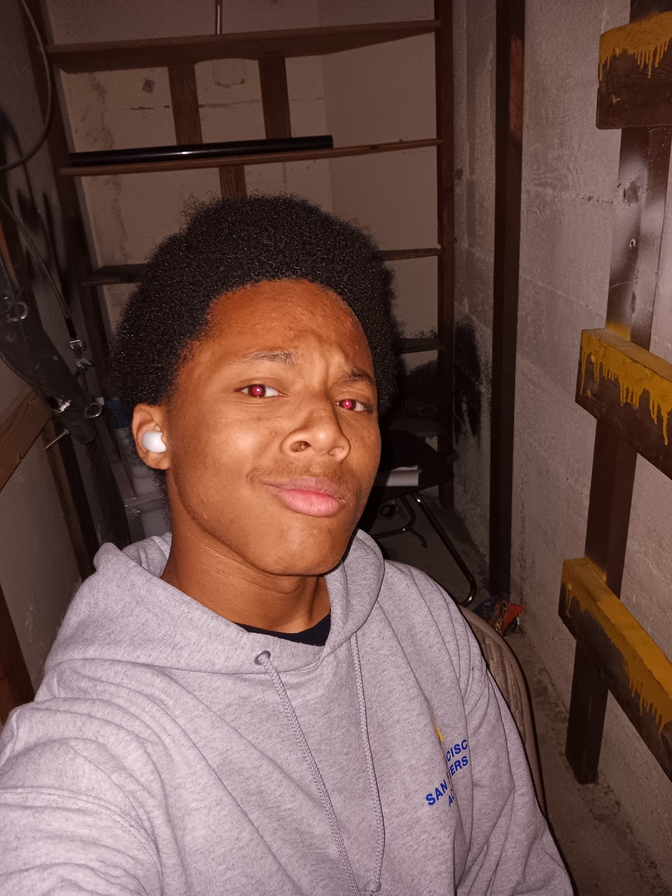

What is a "Michael"?
Lets look and learn!
Disclaimer!
First we want you to understand what this creature is a somewhat dangerous, we dont fully understand why its here or what its planning. We so far know a few things though, where its from, patterns in its behavior, where it is and has been for the last 20 years, and a few more things.
Where is "Michael" from?
From what we have found this creature first surfaced in San Francisco 20 years ago, we have no idea where it exactly came from though, first sightings were in "Potrero Hill" and around "Bayview" SF.
What does it do?
This creatures day to day from what we have been able to observe is pretty much as follows:
- Its loves art, both admiering and creating it in many forms.
- It enjoys cooking and eating, often sean preparing various meats, pastas, and more.
- Loves the forest, often found climbing trees or playing in the grass.
- We have found that it also loves animations and shows, it watches a lot of anime and american animated showes/movies. It is easily destracted by any sort of complex or intresting visuals.
- This creature is also often fond traveling via skateboard, it will bomb the same hills repetedly throughout a week.
- "Michael" as we call it loves collecting items as well, wether it be of value or just to have, it will grab many things.
These are some visuals of "Michael", Call (000)-302-4429 to alert both reserchers and local athorities.


More information for those curious about this creature.
(ps, its just me)